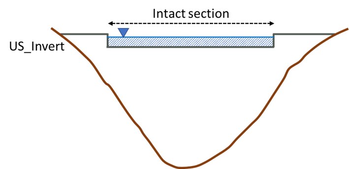
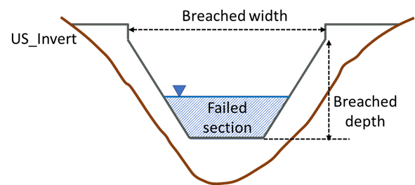

5.9 Operational Channels
Gated rectangular culverts, pumps, sluice gates, gated spillways, weirs and Q channels can be operated using logical scripts. An “O” Type flag is required within the 1d_nwk layer for structures that are to be operated using an operating control definition. For example, an operated pump would have a Type attribute of “PO” or “OP”.
Operating rules are contained within a .toc file (TUFLOW Operations Control) with each set of rules contained within a control definition. More than one structure/device can use the same control definition. The .toc file is referenced using Read Operating Controls File via the .ecf file, or via the .tcf file within a Start 1D Domain block or by preceding the command with “1D”.
The operating rules for a control can only occur within a .toc file. More than one .toc file can be set up and accessed should there be a need to break the control definitions into several files (for example, all pump controls could be placed in one file and sluice gate controls in another).
Operational structure time-series data are output to the _1d_O.csv file. The file reports the time varying status of the structure and the resulting flow rate. Values of user defined variables and other information are also output to this file. This is discussed in greater detail within Section 15.2.4.
5.9.1 .toc File Commands and Logic
5.9.1.1 Define Control Command
A .toc file can only contain Define Control and End Define blocks.
Each Define Control must include a keyword indicating the type of structure/device as per below:
…
Where
Within the control definition, commands specific to the type of structure/device can be used to adjust the structure/device’s operation. The commands available for each type of control are described below.
Each Define Control block consists of three sections:
- The default settings for the control’s commands. These are usually placed at the top of the definition and prior to the logical rules. These default settings are used at the start of the
simulation/operation and during the operation unless changed by the logical rules.
- User defined variables as described further below.
- One or more logical rules as described further below.
An example of a definition control with the three sections is provided below.
5.9.1.2 User Defined Variables
If a line in the control definition cannot be processed as one of the commands described above, and it is not within an If…End If block, it is treated as a variable definition using the syntax:
Where
| Variable Value | Description |
|---|---|
| constant | Sets the variable to the value of <constant>. Must be a number. |
| Time of Model | Sets the variable to the simulation time in hours. |
| Time in 24H | Sets the variable to the simulation time in hours on a 24-hour clock (i.e. will always be between 0 and 24 hours). A simulation time of zero is equivalent to midnight. |
| Time Stamp | Sets the variable to the current simulation time and keep the variable constant until the variable is changed by a repeat execution of “Time Stamp”. |
| Day of Week | Sets the variable to the day of the week where Sunday is 1 and Saturday is 7. The keywords “Sun”, “Mon”, “Tue”, “Wed”, “Thu”, “Fri” and “Sat” can also be used when using the variable in a logic rule. |
| Period No Change | Sets the variable to the time in hours since there was last a change in operation. |
| H1D <node_id> | Sets the variable to the water level at the 1D node named <node_id>. |
| Q1D <channel_id> | Sets the variable to the flow in the 1D channel named <channel_id>. |
| H2D <x>,<y> | Sets the variable to the water level at the 2D cell located at the XY coordinates <x>,<y> |
| H2D <2d_po_ID> | Sets the variable to the water level at the 2D plot output location given by the plot output ID. |
| HU | Sets the variable to the 1D water level at the upstream node of the channel, based on the digitised direction of the channel. |
| HD | Sets the variable to the 1D water level at the downstream node of the channel based on the digitised direction of the channel. |
| dHUD | Sets the variable to the difference in water level between the upstream and downstream nodes based on the digitised direction of the channel. Will be negative if flow is in opposite direction to digitised direction. |
| H1 | Sets the variable to the upstream water level of the channel based on the flow direction. |
| H2 | Sets the variable to the downstream water level of the channel based on the flow direction. |
| dH12 | Sets the variable to the difference in water level between the upstream and downstream nodes based on the flow direction of the channel. Will always be positive. |
| YU | Sets the variable to the depth above the structure invert of the upstream node based on the digitised direction of the channel. |
| YD | Sets the variable to the depth above the structure invert of the downstream node based on the digitised direction of the channel. |
| Y1 | Sets the variable to the upstream depth relative to the structure invert based on the flow direction. |
| Y2 | Sets the variable to the downstream depth relative to the structure invert based on the flow direction. |
The 2020-10 release introduced a feature to allow operational control channels to refer to the status/variables from other operational control channels. This makes coordinated operations possible between multiple operational structures. The supported status/variables include:
- “Period No Change” returns the time in hours since there was a change in operation in another operational channel.
- “Status” returns the operational status keywords in text format for different types of operational channels. The full list of keywords is summarised in Table 5.21. A working example of this feature is provided in the 1D Operating Structures Example Model Dataset on the TUFLOW Wiki.
- “Operational Variables” returns the numeric values of operational variables from other operational channels, such as “Gate Height”, “Weir Width”, etc. The full list of keywords is summarised in Table 5.22.
The operational control channel ID (1d_nwk attribute) must be added at the end of user defined variable commands listed above to refer to the “Period of No Change”, “Status” or “Operational Variable” from other operational channels, e.g.:
| Operational Channels | Status Strings |
|---|---|
| Pumps (PO) | “Off”, “Dry”, “Below Soffit”, “Starting”, “Stopping”, “Constant”, “Pump Curve” |
|
Gated Drowned Rectangular Culverts (RO) Sluice Gates (SGO) Spillways with Gates (SPO) Weirs (WBO, WCO, WDO, WOO, WRO, WTO) Dam failure (DF) Pipe failure (PF) |
“Opening”, “Closing”, “Steady”, “Closed”, “Fully Open” |
| Operational Channels | Operational Variables |
|---|---|
| Pumps (PO) | Pump Flow |
| Q channel (QO) | Q Opening, Q Fully Open |
| Gated Drowned Rectangular Culverts (RO) | Gate Height, Gate Width |
| Sluice Gates (SGO) | Gate Opening |
| Spillways with Gates (SPO) | Gate Opening |
| Weirs (WBO, WCO, WDO, WOO, WRO, WTO) | Weir Height, Weir Width |
| Dam failure (DF) | Breach Depth, Top Width |
| Pipe failure (PF) | Orifice Height, Orifice Width |
In the example below, the model has an operational sluice gate (“SGate1”) and an operational pump (“Pump1”). Pump1 calls the “status” of SGate1 and operates only if SGate1’s status is “Closed”.
5.9.1.3 Logic Rules
The logic rules consist of using If…End If blocks using the construct below.
- A “+”, “-“, “*” or “/” and a constant value. For example, a condition could be “x + 2 < 3”; or
- Specifying “HIGHER” or “LOWER” to compare the current value of the variable to its value at the start of the current period of no change in operation. For example, “x == LOWER” will be true if the current value of ‘x’ is less than its value at the last time there was a change in operation.
If more than one condition is to be applied, the conditions must be separated by either an “and” or “or”. <condition_2>, <condition_3>, etc. have the same format as for <condition_1> above.
If…End If blocks can be nested inside other If…End If blocks. Indenting is strongly recommended to make the control file easier to read.
5.9.1.4 Incremental Operators
For the majority of the parameters / variables within a control block these can be manipulated using simple arithmetic. For example, within a control block, rather than opening a gate to a set opening height or percentage it is possible to open by a set amount:
Gate Opening % == 50 will open the gate to 50% open
Gate Opening % == ++ 10 will open the gate by 10% from its previous position
Four incremental / arithmetic operators are available, these are:
- ++ increment up
- -- increment down
- ** multiply
- // divide
These can be used with or without the percentage operator.
The example below shows the control definition for a pump that operates between 6am and 6pm Monday to Friday and 10am and 4pm on the weekends.
The example below shows the control definitions for a gravity released discharge to a power station (modelled as a pump) and the gated discharge through the reservoir (courtesy of Natural Resources Department, Wales).
5.9.2 Pumps (P and PO)
Pumps can be modelled as a “P” or “PO” type channel. In non-operational mode (P channel), the pump flow is interpolated from a head discharge curve in the Depth Discharge Database defined via a head difference versus flow relationship – see Section 5.10.3. In operational mode, PO, the pump flow can be varied using functions such as: switching on and off over a start-up and shutdown period; and changing the pump capacity and/or discharge curve according to time, day of the week, hydraulic conditions and other variables. Pumps do not contribute to any model storage.
In the 1d_nwk layer, the following attributes can be used to set up the pump (also see Table 5.19).
- ID = Unique Channel ID.
- Type = “P” or “PO”.
- US_Invert = Intake elevation of the pump.
- DS_Invert = Outlet elevation of the receptor.
- Inlet_Type = For non-operated (P) pumps the pump discharge curve in the Depth Discharge Database. This curve is a head difference versus discharge curve, and for a pump this curve would usually have greater flows for smaller head differences. If the head difference is negative (i.e. the receptor water level is below the intake water level) the discharge used is that for a zero head difference. For operational (PO) pumps Inlet_Type refers to the Pump operational control definition (see Define Control).
- Width_or_Dia = Diameter of the pump’s outlet pipe/hose. Used to trigger dry conditions (see below) and for calculating the velocity.
- Height_or_WF = For PO pumps the initial operating pump capacity for fixed (constant) flow pumps (subject to not being overridden by an operational control command).
- Number_of = Number of (identical) pumps represented by the channel.
P and PO pumps are simulated as dry (zero flow) if the upstream (intake) node is dry or the upstream water level is below the intake elevation plus the output pipe diameter (i.e. the upstream (intake) water level is below the intake soffit, which equals the US_Invert + Width_or_Dia).
P pumps always produce a flow in the direction the P channel is digitised based on that interpolated from the pump discharge curve; the exception being when dry as described above.
PO pumps are typically operated on a time basis or based on hydraulic conditions elsewhere in the model. Operational control commands specific to the Define Pump Control command are provided below. Subject to not being overridden by an operational control command, PO pumps are assumed to be OFF at the start of the simulation.
- Pump Operation turns the pump on or off.
- Period Startup/Shutdown sets the time taken to start the pump up or shut it down.
- Pump Capacity sets the flow capacity of the pump. It is possible to set a constant flow rate or a head-discharge curve referenced within the Depth Discharge Database.
- Pump Number sets the number of pumps in parallel.
The operational status of each pump is reported over time in the _O.csv output (see Section 15.2.4). Possible status conditions include:
- “Off” is the pump is switched off.
- “Dry” if the upstream (intake) node is dry.
- “Below Soffit” if the upstream (intake) water level is below the intake soffit.
- “Starting” and “Stopping” indicate the pump is starting up or stopping within Period Startup/Shutdown.
- “Constant” indicates the pump has reached full flow capacity after starting up and is operating at its constant (fixed) flow rate, or “Pump Curve”, which indicates the pump is operating at a flow rate based on interpolating into its head discharge curve.
Models using pumps are provided in the 1D Operating Structures Example Model Dataset on the TUFLOW Wiki.
5.9.3 QO Channels
For QO channels, depth discharge curves for different structure openings are used to vary and control the discharge. The relationships are contained in a csv file in a similar format as used for M channels (see Section 5.8.1). The vertical axis is the depth above the channel’s invert and the horizontal axis is the percentage opening as shown in the example below. In the example, Column A contains the depth above invert values and Row 2 the % opening values. Note that the value in cell A2 is a flow multiplier. If this value is empty, negative or set to zero (0), a multiplier of one (1) is used. The flow through the channel is interpolated from this table at each timestep based on the structure’s opening and upstream depth above the invert.
In the 1d_nwk layer, the following attributes can be used to set up a QO channel.
- ID = Unique Channel ID.
- Type = “QO”.
- US_Invert = Elevation corresponding to zero depth in the depth-discharge curve.
- Inlet_Type = Contains both the control_ID and the link to the csv file containing the matrix of flows for different openings and upstream water level as per discussion above. For example, “DS_Gate | QChannel.csv”.
- Width_or_Dia = Not used other than to estimate the velocity and contribute to nodal storage.
The following commands are specific to the Define Q Channel Control command used for QO channels.
- Gate Speed sets the speed the gate moves.
- Period Opening/Closing sets the time taken to transition from zero to 100% opening or vice versa.
- Gate Opening sets the position of the opening to be operated towards. This can be specified incrementally or as an absolute value.
- Discharge Curve Type sets how the depth/head discharge curves are calculated.
An example of the GIS attributes and .toc commands for a QO channel are provided below.


5.9.4 Gated Drowned Rectangular Culverts (RO)
Rectangular culverts with a gate on the exit can be operated using the .toc commands below for a Define Culvert Control block. The command is applicable for operated rectangular (RO) culverts only, and uses the equation below as implemented into TUFLOW for a project based in Florida. The equation below is for US Customary Units, but RO culverts can be used in metric or US Customary units. Note that the equation is for submerged culverts only, and the user must ensure that the culvert is drowned at all times.
- Gate Type sets the type of gate arrangement.
- Gate Speed sets the speed at which the gate moves.
- Period Opening/Closing sets the time taken to fully open a closed gate or to fully close an open gate.
- Gate Height Fully Open sets the height (not elevation) of the gate when fully open above the gate’s seat for vertically moving gates. If not set, the 1d_nwk “Height” attribute is used.
- Gate Width Fully Open sets the width of the gate(s) when fully open for horizontally moving gates. If not set, the 1d_nwk “Width_or_Dia” attribute is used.
- Gate Opening sets the position the gate is to be operated towards. This can be specified incrementally or as an absolute value.
- Cd sets the discharge coefficient Cd in the equation above.
5.9.5 Sluice Gates (SG and SGO)
Sluice gates can be operated using the .toc commands further below for a Define Sluice Control block. The approach to calculating the flow through the gate is based on that documented in the HEC-RAS 4.0 Reference Manual as described below. For non-operated sluice gates (SG) the gate is assumed to be in a fixed position based on the 1d_nwk Height_or_WF attribute value.
For a free-flowing sluice gate (i.e. upstream controlled) Q is calculated using: \[\begin{equation} Q = C_{d}WB\sqrt{2gH_{1}} \tag{5.16} \end{equation}\]
Where:
- \(Q = \ \)Discharge
- \(C_{d} = \ \)Discharge coefficient upstream controlled flow (default = 0.6)
- \(W = \ \)Width
- \(B = \ \)Height of gate opening above crest level
- \(H_{1} = \ \)Upstream energy level – Crest level
For downstream controlled flow:
\[\begin{equation} Q = C_{s}WB\sqrt{2g\mathrm{\Delta}H} \tag{5.17} \end{equation}\]
Where:
- \(C_{s} = \ \)Submerged discharge coefficient (default = 0.8)
- \(\mathrm{\Delta}H = \ \)Upstream energy level – Downstream level
For the transition between upstream controlled and full submergence downstream controlled flow:
\[\begin{equation} Q = C_{d}WB\sqrt{2g3\mathrm{\Delta}H} \tag{5.18} \end{equation}\]
The transition between downstream and upstream controlled flow equations is based on the degree of submergence calculated as the tailwater depth above the spill crest divided by the upstream energy depth. For a ratio below 0.67 upstream controlled flow applies, above 0.8 downstream controlled flow and in between the transition equation applies.
Note that by default the energy level is used for calculating H1 and \(\mathrm{\Delta}H\), however, this can be changed as follows:
- Setting the global default to water surface level using
Structure Flow Levels == WATER or by using the “H” flag for the Type attribute (see Table 5.2). - Setting the global default to energy at the upstream node and water level at the downstream node using
Structure Flow Levels == ENERGY UPSTREAM or by using the “EH” flag for the Type attribute (see Table 5.2). This option was introduced in the 2023-03-AC build.
When the flow is not in contact with the gate one of the following options apply:
- One of the advanced weir types (see Section 5.7.4.3) can be specified for the sill by adding the weir type to the 1d_nwk Type attribute (e.g. “SGWB” or “SG WB” are accepted). The weir equation for the weir type is applied when the gate is not controlling the flow. It is recommended that one of the rectangular weir shapes is used (i.e. WB, WD, WO or WR).
- If no weir is associated with the SG channel, the flow is calculated using a zero length rectangular culvert channel with adjusted entrance and exit losses as per a zero length culvert. Note the total of the entrance and exit losses is defined by the ‘Form_Loss’ attribute (see Table 5.19), where 1/3 and 2/3 of the ‘Form_Loss’ value are assigned as entrance and exit losses, respectively (typically 0.5 and 1.0).
In the 1d_nwk layer, the following attributes can be used to set up the SG or SGO channel.
- ID = Unique Channel ID.
- Type = “SG” or “SGO”.
- US_Invert and DS_Invert: The higher value is used for the sill crest.
- Width_or_Dia = Width of the gate.
- Height_or_WF = The height above the sill crest of the gate when fully opened (subject to not being overridden by an operational control command).
- Number_of = Number of (identical) parallel gates.
The following commands can be used within the Define Sluice Control block.
- Gate Speed sets the speed the gate moves.
- Period Opening/Closing sets the time taken to fully open a closed gate or to fully close an open gate.
- Gate Height Fully Open sets the height (not elevation) of the gate when fully open above the gate’s seat for vertically moving gates. If not set, the 1d_nwk “Height” attribute is used.
- Gate Opening sets the position the gate is to be operated towards. This can be specified incrementally or as an absolute value.
- Cd Gate sets the discharge coefficient of the gate, Cd.
- Cd Gate Submerged sets the submerged discharge coefficient, Cs.
A working example of a model containing a sluice gate is provided in the 1D Structures Example Model Dataset on the TUFLOW Wiki.
5.9.6 Spillways with Gates (SPO)
Gated spillways can be operated using the approach documented in the USACE Hydraulic Design Criteria Sheet 312 (USACE, 1977) for Vertical Lift Gates on Spillways.
For flow over the spillway unaffected by a gate the following equation applies:
\[\begin{equation} Q = {\frac{2}{3}C}_{d}WH\sqrt{2gH} \tag{5.19} \end{equation}\]
Where:
- \(Q = \ \)Discharge
- \(C_{d} = \ \)Discharge coefficient (default = 0.75)
- \(W = \ \)Width of the spillway (rectangular cross-section assumed)
- \(H = \ \)Upstream energy level – Crest level
NOTE: Cd prior to the 2016-03 release was based on \(\mathbf{Q =}\mathbf{C}_{\mathbf{d}}\mathbf{WH}\sqrt{\mathbf{2}\mathbf{gH}}\) (as per Sheet 312), with a default Cd value of 0.5. As of the 2016-03 release, SPO channels now use the same formula as SP and weir channels and use a default value of 0.75.
The ratio of the gated discharge to the ungated discharge is derived as:
\[\begin{equation} \frac{Q_{G}}{Q} = \frac{C_{G}}{C_{d}}\left( \frac{H_{2}^{\frac{3}{2}} - H_{1}^{\frac{3}{2}}}{H^{\frac{3}{2}}} \right) \tag{5.20} \end{equation}\]
Where:
- \(C_{G}\) = Discharge coefficient (default = \(C_{d}\))
- \(H_{1}\) and \(H_{2}\) = See diagram below from Sheet 312
If QG is less than Q, QG is used for the flow through the structure. The structure is also tested for submergence using the same setting as for Ogee Weirs (see Section 5.7.4.4).
Note that by default the energy level is used for calculating H1 and \(\mathrm{\Delta}H\), however, this can be changed as follows:
- Setting the global default to water surface level, using
Structure Flow Levels == WATER , or by using the “H” flag for the Type attribute (see Table 5.2). - Setting the global default to energy at the upstream node and water level at the downstream node, using
Structure Flow Levels == ENERGY UPSTREAM , or by using the “EH” flag for the Type attribute (see Table 5.2). This option was introduced in the 2023-03-AC build.
In the 1d_nwk layer, the following attributes can be used to set up a SPO channel. Note that the 1d_nwk values can be overridden by their equivalent operational control command.
- ID = Unique Channel ID.
- Type = “SPO”.
- US_Invert = Spillway crest level.
- DS_Invert = Gate seat level (see GATE SEAT EL in diagram from Sheet 312). If DS_Invert is higher than US_Invert ERROR 1050 results.
- Width_or_Dia = Width of the gate.
- Height_or_WF = The height of the gate above the gate seat when fully opened.
- Number_of = Number of (identical) parallel spillways.
The following section lists commands specific to the Define Spillway Control commands.
- Gate Speed: sets the speed the gate moves.
- Period Opening/Closing: sets the time taken to fully open a closed gate or to fully close an open gate.
- Gate Height Fully Open: sets the height (not elevation) of the gate when fully open above the gate’s seat for vertically moving gates. If not set, the 1d_nwk “Height” attribute is used.
- Gate Seat Vertical Offset: sets the difference in height between the spillway crest and the seat of the gate (i.e. the CREST EL minus GATE SEAT EL in the diagram above from Sheet 312).
- Gate Opening: sets the position the gate is to be operated towards. This can be specified incrementally or as an absolute value. This value is GO in the diagram above from Sheet 312.
- Cd Spillway: sets the discharge coefficient of the spillway, Cd. Default value is 0.75.
- Cd Gate: sets the discharge coefficient of the gate, CG. By default assumed to be the same as Cd Spillway see Sheet 312.
Models using spillways with gates are provided in the 1D Operating Structures Example Model Dataset on the TUFLOW Wiki.
5.9.7 Weirs (WBO, WCO, WDO, WOO, WRO, WTO)
Weirs can be operated to simulate structures such as fabri (inflatable) dams for the WB, WC, WD, WO, WR and WT weir types.
In addition to the 1d_nwk attributes for non-operated weirs (see Section 5.7.4.3) the following criteria is used to set the limiting dimensions via the 1d_nwk attributes as follows:
- Width_or_Dia = The width of the weir when fully open, or if the width remains unchanged throughout.
- Height_or_WF = The maximum height the weir can be raised above the weir invert during operation. The weir invert level is defined by the maximum of the US_Invert and DS_Invert attributes and represents the elevation of the weir when fully lowered. Note that for operational weirs the Height_or_WF attribute cannot be used to set the Weir Calibration Factor, for which a value of 1.0 is used. For example, if we wish to operate a weir up to an elevation of 15m for a structure with 1d_nwk attributes US_Invert = 9.9m and DS_Invert = 10m the following would apply:
- The weir invert would be at an elevation of 10m (which corresponds to a weir height of zero (0) m).
- The Height_of_WF attribute would be 5m (i.e. a height of 5m above the weir invert).
- The weir invert would be at an elevation of 10m (which corresponds to a weir height of zero (0) m).
The following are the commands specific to Define Weir Control blocks for operating weirs.
- Weir Height: sets the height above the weir crest to operate towards.
- Weir Width: sets the width of the weir to operate towards.
- Weir Height Speed: sets the speed of the weir in the vertical.
- Weir Width Speed: sets the speed of the weir in the horizontal.
- The generic commands Operation and Period Opening/Closing also apply.
- Cf sets the weir calibration factor (default = 1.0). Note the “Height_or_WF” attribute is used to define the height of the operational weir above the crest level. This .toc command was added in the 2020-10 release to specify the weir calibration factor (Cf) for an operational weir.
Note the default values of Weir Height and Weir Width are both zero (0). To set the initial position of the weir, specify these commands before the if logic block in the .toc file.
The 2023-03-AB build introduced three new commands, based on Section 9.11 of USBR (1987), which includes an allowance for side or horizontal flow contraction caused by piers and abutments that contract the flow and reduces the flow width over the weir (\(W\)) to an effective flow width (\(W'\)) using:
\[\begin{equation} W' = W - 2(NK_{p} + K_{a})H_{e} \tag{5.21} \end{equation}\]
Where:
- \(H_{e}\) = Upstream energy or water level (see Structure Flow Levels command).
- \(N\) = Number of piers.
- \(K_{p}\) = Pier contraction coefficient.
- \(K_{a}\) = Abutment contraction coefficient.
The new .toc file commands to specify the parameters are:
- Number of Piers: Sets the number of piers over a weir (the default is zero, 2023-03-AB build and onwards).
- Kp: Sets the pier contraction coefficient (the default is zero, 2023-03-AB build and onwards).
- Ka: Sets the abutment contraction coefficient (the default is zero, 2023-03-AB build and onwards).
Section 9.11 of USBR (1987) recommends the following values for the pier contraction coefficient \(K_{p}\):
- Square-nosed piers with corners rounded on a radius equal to about 0.1 of the pier thickness: \(K_{p}\) = 0.02
- Round-nosed piers: \(K_{p}\) = 0.01
- Pointed-nose piers: \(K_{p}\) = 0.0
The recommended values for the abutment contraction coefficient \(K_{a}\) depends on the shape of the abutment, the design head (\(H_{0}\)) and the radius of abutment rounding:
- Square abutments with headwall at 90° to direction of flow: \(K_{a}\) = 0.20
- Rounded abutments with headwall at 90° to direction of flow, when 0.15\(H_{0}\) ≤ \(r\) ≤ 0.5\(H_{0}\): \(K_{a}\) = 0.10
- Rounded abutments where \(r\) > 0.5\(H_{0}\), and headwall is placed not more than 45° to direction of flow: \(K_{a}\) = 0.0
Note that in the relationship above, the effective flow width (\(W'\)) reduces linearly as the upstream head (\(H_{e}\)) increases. The ratio of contraction calculated by this equation is usually small relative to the actual width of weir (\(W\)). But to avoid unreasonable contraction ratios, a lower limit of 0.6\(W\) is applied.
5.9.8 Piping and Dam Failure
The 2020-10-AB build introduced two new operational channels for piping and dam failure:
- “PF” type: can be used to model the pipe failure process, as discussed in Section 5.9.8.1; and
- “DF” type: can be used to model a dam/levee break, as discussed in Section 5.9.8.2.
In the 1d_nwk layer, the attributes in Table 5.23 can be used to set up the channel parameters.
Models using piping and dam failure are provided in the Dynamic Topography Options Example Model Dataset on the TUFLOW Wiki.
| No. | Default GIS Attribute Name | Description | Type |
|---|---|---|---|
| 1 | ID | Unique identifier up to 12 characters in length. It may contain any character except for quotes and commas and cannot be blank. As a rule, spaces and special characters (e.g. “\”) should be avoided, although they are accepted. | Char(12) |
| 2 | Type |
“PF”: Piping Failure “DF”: Dam Failure |
Char(4) |
| 3 | Ignore | If a “T”, “t”, “Y” or “y” is specified, the object will be ignored (T for True and Y for Yes). Any other entry, including a blank field, will treat the object as active. | Char(1) |
| 4 | UCS | Not used. | Char(1) |
| 5 | Len_or_ANA | Not used. | Float |
| 6 | n_nF_Cd | Not used. | Float |
| 7 | US_Invert |
“PF”: Inlet elevation of the piping. “DF”: Elevation of the dam crest level before failure. |
Float |
| 8 | DS_Invert |
“PF”: Outlet elevation of the piping. “DF”: Not Used. |
Float |
| 9 | Form_Loss | Not used. | Float |
| 10 | pBlockage | Not used. | Float |
| 11 | Inlet_Type |
“PF”: Refers to the Piping Failure operational control definition in .toc file. “DF”: Refers to the Dam Failure operational control definition in .toc file. |
Char(256) |
| 12 | Conn_1D_2D | Not used. | Char(4) |
| 13 | Conn_No | Not used. | Integer |
| 14 | Width_or_Dia |
“PF”: Width of the piping orifice when fully breached. “DF”: Top width of the dam failure channel. |
Float |
| 15 | Height_or_WF |
“PF”: Height of the piping orifice when fully breached. “DF”: Weir coefficient Cd of the intact part. |
Float |
| 16 | Number_of | Not used. | Integer |
| 17 | HConF_or_WC | Not used. | Float |
| 18 | WConF_or_WEx | Not used. | Float |
| 19 | EntryC_or_WSa | Not used. | Float |
| 20 | ExitC_or_WSb | Not used. | Float |
5.9.8.1 Piping Failure (PF)
Dam/levee breaks can be initiated by flow overtopping, or by internal erosion (often called “piping” or “piping failure”) when water seeps through the embankment forming a tiny flow path. This “pipe failure” process can be modelled using a “PF” type 1D operational channel. In the 1d_nwk layer, the attributes in Table 5.23 can be used to set up the channel parameters.
Figure 5.12: Schematisation of 1D Piping Failure
Operational control commands (.toc file) specific to the Piping Failure channel are provided below:
- Period Failure: sets the time taken to reach the full size of piping failure.
- Orifice Width Fully Open: sets the width or the diameter of the piping orifice when fully breached. If omitted,
the value set by the 1d_nwk Width_or_Dia attribute is used.
- Orifice Height Fully Open: sets the height of the piping orifice when fully breached. If omitted, the
value set by the 1d_nwk Height_or_WF attribute is used.
- Period Collapse: sets the time taken to ‘shut down’ the piping failure channel after it reaches the full extent due
to the channel collapsing.
- Orifice Opening: sets the piping failure status.
- Cd: sets the discharge coefficient in the orifice flow equation below.
The flow rate through a piping failure channel is calculated using the orifice flow equation as provided below. Note that zero flow is assumed should the upstream water level fall below the orifice obvert, i.e. no partial flow of the orifice is assumed to occur.
\[\begin{equation} Q = C_{d}A\sqrt{2g\left( H_{up} - H_{down} \right)} \tag{5.22} \end{equation}\]
Where
- \(C_{d}\) is the discharge coefficient set by Cd command
- \(A\) is the cross-sectional area of the orifice
- \(H_{up}\) is the upstream water level
- \(H_{down}\) is the higher of the downstream obvert or downstream water level
It is assumed the orifice shape is rectangular, and the orifice size increases linearly with time. The expansion of the orifice is assumed to be centrally around the upstream and downstream inverts.
An example of a .toc file Define Pipe Failure Control block is provided below:

Models using the piping failure functionality are provided in the Dynamic Topography Options Example Model Dataset on the TUFLOW Wiki.
5.9.8.2 Dam Failure (DF)
The dam failure “DF” type 1D operational channel can be used to model dam/levee breaks in 1D. This channel can commence independently, or be triggered by a 1D pipe failure using “PF” type trigger. The flow rate is calculated based on the advanced weir flow equation (Section 5.7.4.3). Either a rectangular or trapezoidal cross-section can be applied, and the opening size is assumed to increase linearly with time. In the 1d_nwk layer, the attributes in Table 5.23 can be used to set up the channel parameters.
Figure 5.13: Schematisation of 1D Dam Failure
Operational control commands specific to the Dam Failure channel are provided below:
- Period Failure: sets the time taken to reach the full size of the dam failure.
- Top Width Fully Breached: Same as the “Height_or_WF” attribute.
- Depth Fully Breached: Same as the “Width_or_Dia” attribute.
- Side Slope (degree): Sets the angle of the side slopes. This is used for calculating the bottom width and flow area.
- Period Collapse: Defines the time taken to form the dam breach opening at the start of the dam break.
- Depth Collapse: defines the depth of the dam crest collapse during Period Collapse at the beginning of the dam break.
- Breach Opening: Sets the dam failure status.
During any period of the dam failure, the Side Slope is set as constant. If the bottom width calculated from the width, depth and the side slope becomes negative, a V shaped cross-section is assumed based on the width and the side slope. A DF channel can be subject to one of the following three flow phases, depending on the upstream water level and state of the breach:
Flow overtopping above the crest level can occur before the dam break. At this stage, all the water is flowing through the “Intact” section of the dam crest.

After the dam break commences, the water can flow through both the “Intact” section of the dam crest (provided the upstream water level is greater than the invert of the intact section), and the “failed” section. The total flow is reported in the .eof file and the _1d_Q.csv output file, while the flow rate for each section is reported separately in the _1d_O.csv output file.

Once the maximum breach width is reached or there is no flow over any remaining intact sections, the flow is confined entirely within the “Failed” section.

The flow calculation through a 1D dam break channel is computed for both the intact and failed sections, with the user able to set the weir flow equation parameters separately for both sections as per the table below.
| “Intact” Section | “Failed” Section | Description |
|---|---|---|
| Weir Type Intact | Weir Type Failed | Sets the weir channel type using the flags in Table 5.15. If this command is not specified, the defaults are “WB” for the Intact section and “WW” for the failed section. Note that the “Side Slope” is not considered in the cross-section calculation for non-WW type weirs. |
| Cd Intact | Cd Failed | Sets the weir coefficient, Cd, in its dimensionless form. |
| Cf Intact | Cf Failed | Sets the weir coefficient adjustment factor Cf. |
| Ex Intact | Ex Failed | Sets the weir flow equation exponent Ex. |
| Sa Intact | Sa Failed | Sets the submergence factor “a” exponent in the Villemonte Equation for calculating the weir submergence factor Csf. |
| Sb Intact | Sb Failed | Sets the submergence factor “b” exponent in the Villemonte Equation for calculating the weir submergence factor Csf. |
An example of a Define Dam Failure Control block is provided below:

Models using the dam failure functionality are provided in the Dynamic Topography Options Example Model Dataset on the TUFLOW Wiki.
The USBR (1987) approach to include an allowance for side or horizontal flow contraction caused by piers and abutments can be optionally applied for the “Intact” part of a DF channel (see Section 5.9.7). The 2023-03-AB build introduced the following three new commands:
- Number of Piers: Sets the number of piers over the weir (the default is zero, 2023-03-AB build and onwards).
- Kp Intact: Sets the pier contraction coefficient (the default is zero, 2023-03-AB build and onwards).
- Ka Intact: Sets the abutment contraction coefficient (the default is zero, 2023-03-AB build and onwards).